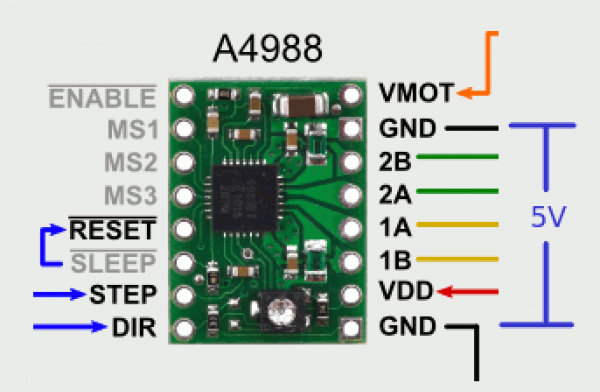
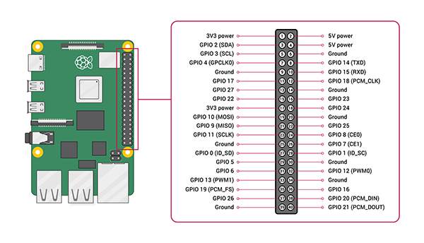

Collegamento del Driver al Raspberry
Partendo da questo schema:

Si prega di collegare nel seguente modo i Pin:
-Mettere on corto i Pin Reset e Sleep
-Pin Step sul GPIO24
-Pin Dir sul GPIO25
Si consiglia altresì di collegare una alimentazione diretta al driver e non passare dal Raspberry.
Per alimentare il motore (Pin Vmot) è necessaria alimentazione 12v.
Si allega schema Gpio del Raspberry
